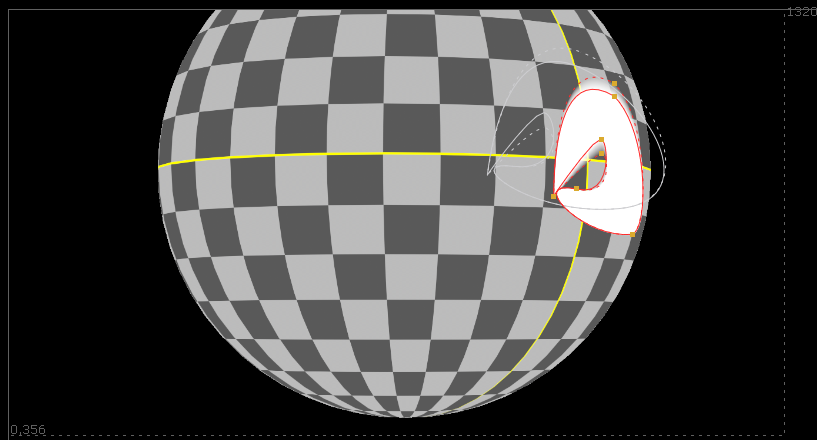
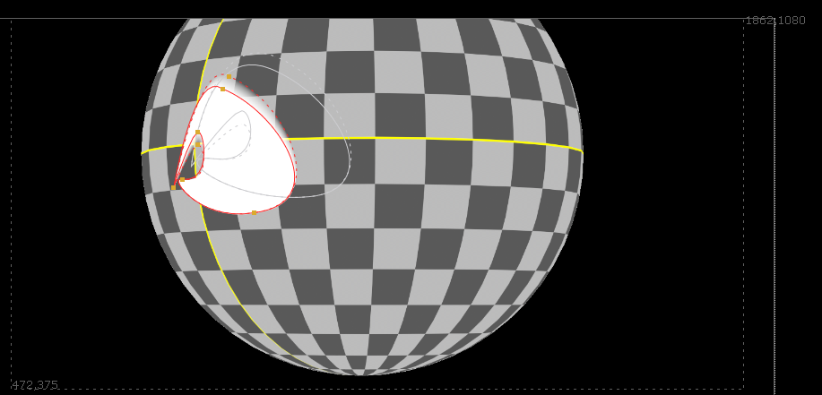
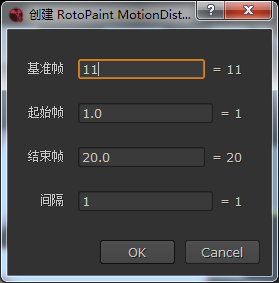
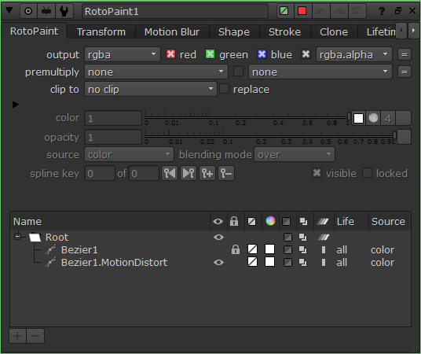

RotoPaint 运动扭曲¶
 基于 motion 层对 RotoPaint 形状进行创建动画。
注解
渲染器的运动模糊快门时间和偏移会影响输出运动向量的值。 将快门偏移设为 0（帧首），快门时间设为 1 (帧首至帧尾) 才是正确的整帧运动向量。
和 运动扭曲 不同此命令仅支持 RotoPaint 但输出为矢量形状方便修改。
在菜单中选择 编辑 - RotoPaint 运动扭曲 进行创建。
执行命令将为所有选中的 RotoPaint 节点中无动画且可见的形状创建一个带动画的副本，并隐藏锁定原始形状。
执行命令需要先进行设置。
为形状创建的动画副本会带 .MotionDistort 后缀，
重复执行此命令将会根据副本本身的基准帧重新生成动画，覆盖原有数据。
小技巧
对生成的形状手动修改后，可再次用修改的帧作为基准帧生成之后或之前的帧。